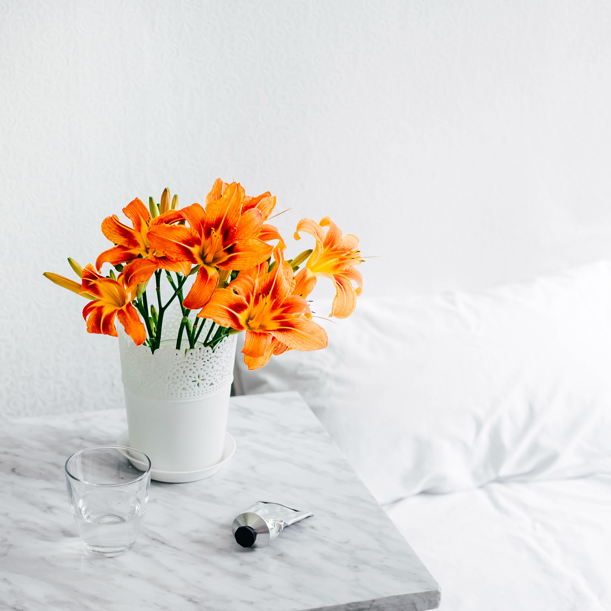

Paintings
Since my childhood ,I like to do painting.This is one of my great hobby.
I feel more relax and happy while doing painting. I have joined painting group in facebook
I feel more satisfied,after I completed the paintings.I have done so many paintings.
I left eveything in my country,when I came here.
Drawings
Since my childhood ,I like to do drawings.
I feel more relax and happy while doing drawings. I watch facebook drawing videos.
I feel more satisfied,after I completed the drawings.
.
Crafts
I like to do more crafts with palstic bags and papers.I design the old bottles and class.
I get more ideas in you tube. I completed the paintings.I have done so many crafts.
I left eveything in my country,when I came here.
Yoga
While I was studying Master degree. I learned Yoga and meditation .It is really helpful to me for relaxation and
healthy.I usually do yoga early in the morning.
Tailoring
I have learned tailoring .I know frocks, blouses, saree blouse pillows ,curtains. This helped me in many ways.
.I learned from my neighbours.
I left eveything in my country,when I came here.
Designing
I have learned Designing in Sri lanka. Embroidary and Aari works for our traditional dresses.This helped me in many ways.
.I learned from my neighbours.
I left eveything in my country,when I came here.
Flowers

I collect different types of flowers. I always take photographs , when I see beautiful flowers.
Music
.jpg)
I listen to meleody music. Whenever I am in stress ,I listen to melody music.I enjoy hearing all types of music.
except rap music.
Dance
.jpg)
I like the dancing very much .Everyday I dance for atleast 30 minutes . My son has Ps4 just dance.
I compete with my son. I like Bharathanatyam. This is our cultural dance.
Cooking
I like to cook different types of foods. I brought upin india ,so I know two diferent types of
recipes.I cook both Sri lankan and Indian foods.Now I like to try Switzerland's food recipes
Reading books
.jpg)
I like to read articles , stories .Everyday I read any motivational stories.
Chess
.jpg)
When I was 15 yeras old. I used to play chess with my friends and family. Sometimes I
play in computer.During my Bacheleor Degree I got second prize in chess.
Billiards
.jpg)
I like to play Billiards, carrom board, cards, UNO.
Watching Movies
.jpg)
I like to watch movies and you tube videos.Especially I like fantacy movies .
I watch TV shows also, like super singer and crime stories in german.
I usually watch for improve my german skills.
.jpg)
.jpg)
.jpg)
.jpg)
.jpg)
.jpg)
.jpg)
.jpg)
.jpg)
.jpg)